Čo nájdeš v aplikácii
What's inside
Pomôcka od praktika pre praktikov – na stroj, do dielne aj do kancelárie technológa.
A tool made by a machinist for machinists – at the machine, in the shop and in the planning office.
Tolerancie otvorov a hriadeľov
Hole and shaft tolerances
ISO 286 – polia A … Z aj a … z, stupne IT1 – IT18, horný a dolný medzný rozmer, stred tolerancie aj nákres.
ISO 286 – fields A … Z and a … z, grades IT1 – IT18, upper and lower limits, mean size and a drawing.
Uloženia a voľné tolerancie
Fits and general tolerances
Vôľa, presah aj prechodné uloženie (napr. H7/g6) a voľné tolerancie ISO 2768.
Clearance, interference and transition fits (e.g. H7/g6) and ISO 2768 general tolerances.
Závity a vrták pod závit
Threads and tap drill sizes
Metrické hrubé aj jemné, UNC, UNF, UNEF, Tr, Pg, G, R, NPT, BSW a BSF – rozmery, tolerancie a odporúčaný vrták.
Metric coarse and fine, UNC, UNF, UNEF, Tr, Pg, G, R, NPT, BSW and BSF – dimensions, tolerances and recommended drill.
Otáčky, posuv a čas
Speeds, feeds and time
Sústruženie, frézovanie, frézy, vŕtanie a závitovanie podľa materiálu, s limitom otáčok stroja. K tomu sústruženie závitov s hĺbkou závitu a koncovým X.
Turning, milling, end mills, drilling and tapping by material, with your machine's max RPM. Plus thread turning with thread depth and final X.
Materiály
Materials
Skupiny materiálov, porovnanie označení a vlastnosti – stačí napísať napr. C45, 1.4301 alebo 42CrMo4.
Material groups, equivalent designations and properties – just type C45, 1.4301 or 42CrMo4.
Časovač pre každý stroj
A timer for every machine
Ľubovoľný počet strojov s názvom a ikonou. Upozorní pred koncom a na konci zvoní aj pri zamknutom iPhone. 11 vlastných tónov.
Any number of machines with a name and icon. Warns before the end and rings even when the iPhone is locked. 11 original tones.
Dochádzka a smeny
Attendance and shifts
Príchody a odchody, prestávky, nadčasy, fond pracovného času a orientačný hrubý zárobok. Kalendár zmien vrátane 4-zmennej prevádzky.
Clock-in and out, breaks, overtime, working-time fund and an estimate of gross pay. Shift calendar including 4-crew operation.
Kalkulačka a poznámky
Calculator and notes
Kalkulačka s históriou, uhlami a výpočtom trojuholníka. Poznámky v priečinkoch s číslovaním a odrážkami.
Calculator with history, angles and a triangle solver. Notes in folders with numbering and bullets.
Jedno hľadanie na všetko
One search for everything
Napíš H7, 25H7, M10, G 1/2 alebo C45 a hneď sa dostaneš tam, kam potrebuješ. Pamätá si posledné hľadania.
Type H7, 25H7, M10, G 1/2 or C45 and jump straight to the result. Remembers recent searches.
Takto to vyzerá v iPhone
See it on iPhone
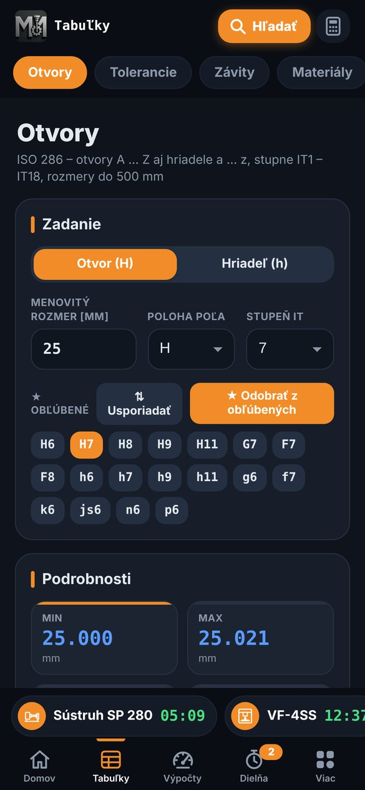
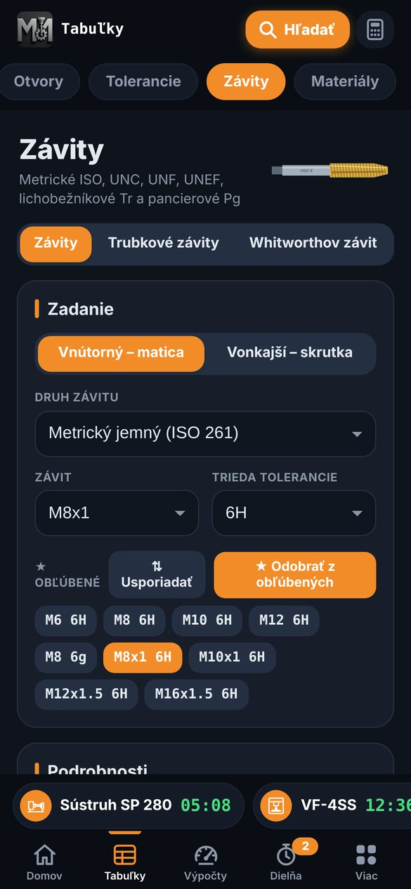
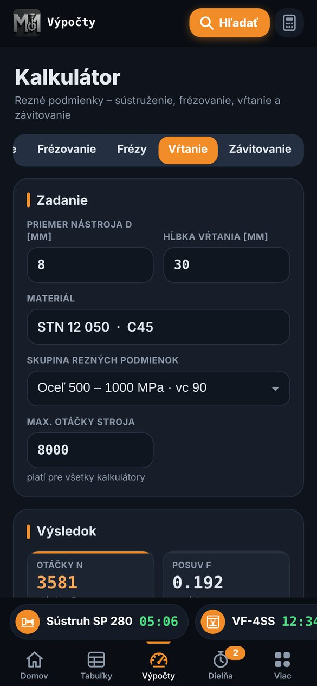
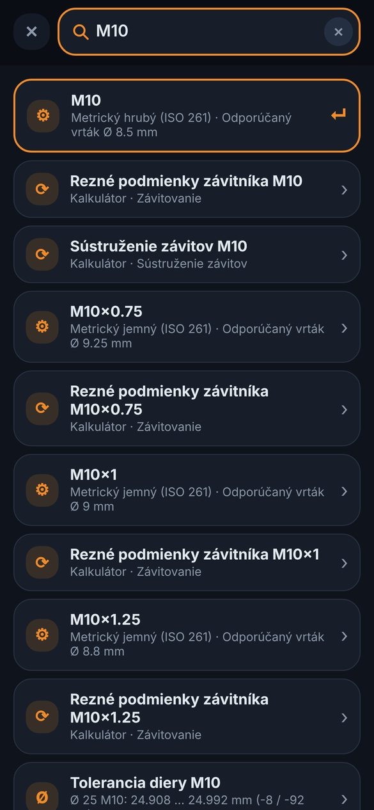
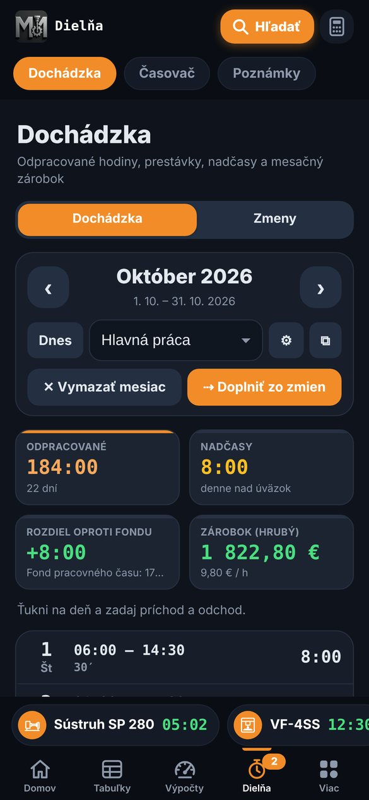
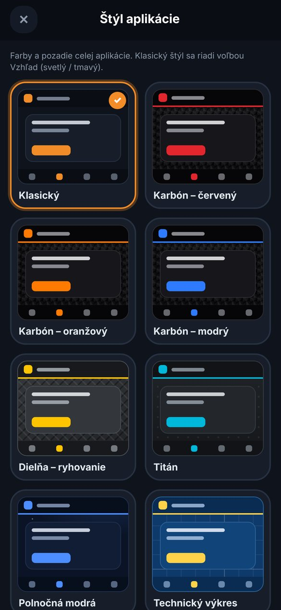
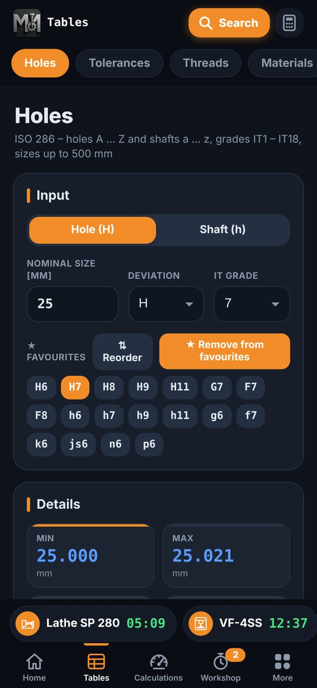
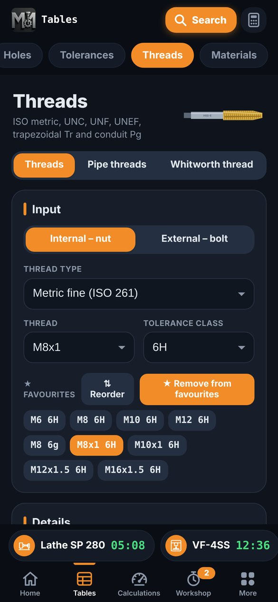
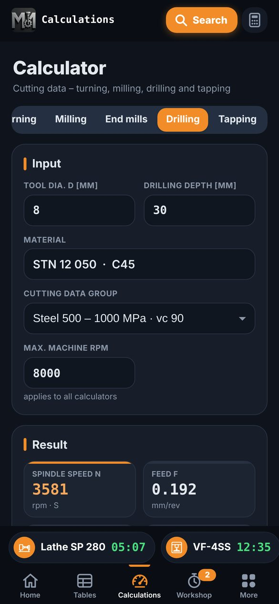
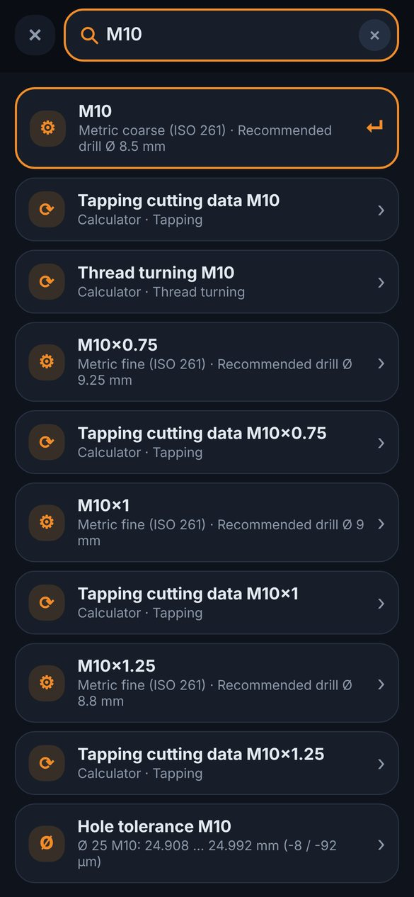
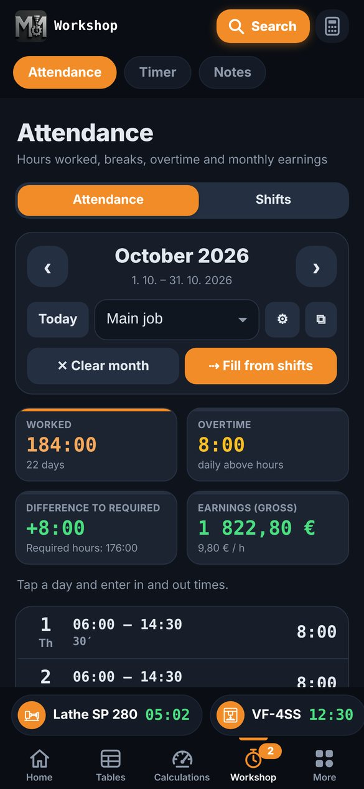
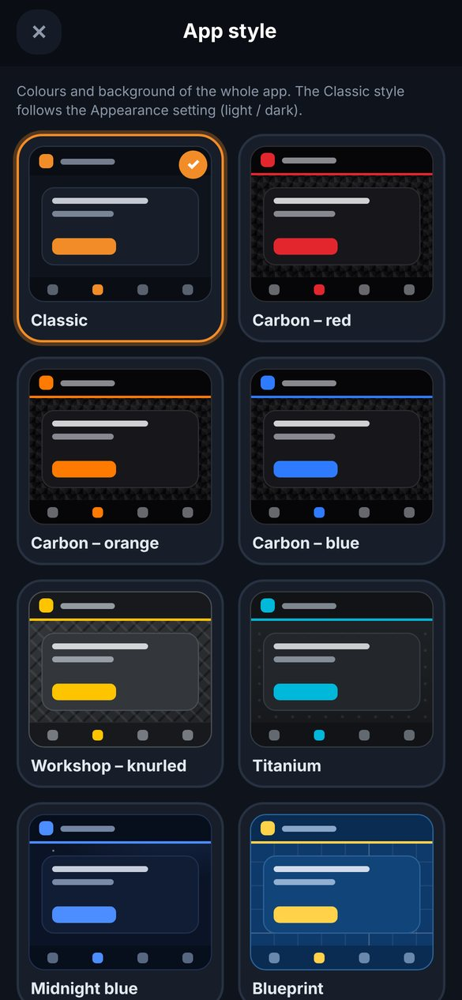
Rýchla, súkromná, vždy po ruke
Fast, private, always at hand
Časté otázky
Frequently asked questions
Potrebuje aplikácia internet?
Nie. Všetky tabuľky, výpočty aj údaje sú priamo v telefóne. Aplikácia nič neodosiela a nepotrebuje účet.
Časovač nezvoní, keď je iPhone zamknutý.
- Pri prvom štarte časovača povoľ upozornenia (Nastavenia iPhonu → Strojársky kalkulátor → Upozornenia).
- Aplikáciu nezatváraj potiahnutím nahor – stačí ju nechať v pozadí alebo zamknúť telefón.
- Skontroluj hlasitosť. Tón a dĺžku zvonenia nastavíš vo Viac → Nastavenia → Časovač (tlačidlo ▶ tón prehrá).
Ako zmením jazyk, vzhľad alebo jednotky (mm / palce)?
Viac → Nastavenia. Jazyk sa predvolene riadi jazykom iPhonu. Štýl a pozadie zmeníš vo Viac → Štýl aplikácie.
Ako si zálohujem údaje alebo ich prenesiem do nového telefónu?
Viac → Nastavenia → Údaje → Zálohovať údaje. Vytvorí sa súbor, ktorý si uložíš napr. do Súborov alebo pošleš e-mailom. V novom telefóne ho načítaš cez Obnoviť zo zálohy. Záloha obsahuje poznámky, dochádzku, zmeny, časovače, históriu kalkulačky a nastavenia.
Sú vypočítané rezné podmienky záväzné?
Nie, sú orientačné. Skutočné hodnoty závisia od upnutia, nástroja, stroja a ďalších vplyvov. Vždy over hodnoty podľa odporúčaní výrobcu nástroja a vlastných skúseností.
Ako si pridám vlastné skratky na úvodnú obrazovku?
Domov → Obľúbené → Upraviť a vyber, čo chceš mať po ruke (napr. Vŕtanie, Závity, Časovač).
Je dochádzka a zárobok presný?
Ide o pomôcku na vlastnú evidenciu. Zárobok je orientačný hrubý výpočet podľa tvojej hodinovej sadzby a príplatkov, ktoré si nastavíš.
Does the app need internet?
No. All tables, calculations and your data are stored on the phone. The app sends nothing and needs no account.
The timer doesn't ring when my iPhone is locked.
- Allow notifications when you start your first timer (iPhone Settings → Strojársky kalkulátor → Notifications).
- Don't swipe the app away – just leave it in the background or lock the phone.
- Check the volume. Choose the tone and ringing time in More → Settings → Timer (▶ plays the tone).
How do I change the language, look or units (mm / inch)?
More → Settings. By default the language follows your iPhone. Change theme and background in More → App style.
How do I back up my data or move it to a new phone?
More → Settings → Data → Back up data. A file is created that you can save to Files or send by e-mail. On the new phone, load it with Restore from backup. The backup contains notes, attendance, shifts, timers, calculator history and settings.
Are the cutting data binding?
No, they are a guide only. Real values depend on clamping, the tool, the machine and other factors. Always check them against the tool maker's recommendations and your own experience.
How do I add my own shortcuts to the home screen?
Home → Favourites → Edit and pick what you want at hand (e.g. Drilling, Threads, Timer).
Is the attendance pay exact?
It's a tool for your own records. Pay is an estimated gross amount based on the hourly rate and bonuses you set.
Podpora a nápady
Support and ideas
Našli ste chybu, chýba vám nejaký výpočet alebo máte nápad? Napíšte mi, odpovedám zvyčajne do pár dní.
Found a bug, missing a calculation or have an idea? Write to me – I usually reply within a few days.
mmcncam@gmail.com
Telefón:Phone: +421 902 360 994
Adresa je skopírovaná.Address copied.
Pri hlásení chyby pomôže: model iPhonu, verzia iOS, verzia aplikácie (Viac → Licencia a upozornenie) a postup, ako chybu vyvolať. Snímka obrazovky veľmi pomôže.
When reporting a bug, please include: iPhone model, iOS version, app version (More → Licence and notice) and the steps to reproduce it. A screenshot helps a lot.